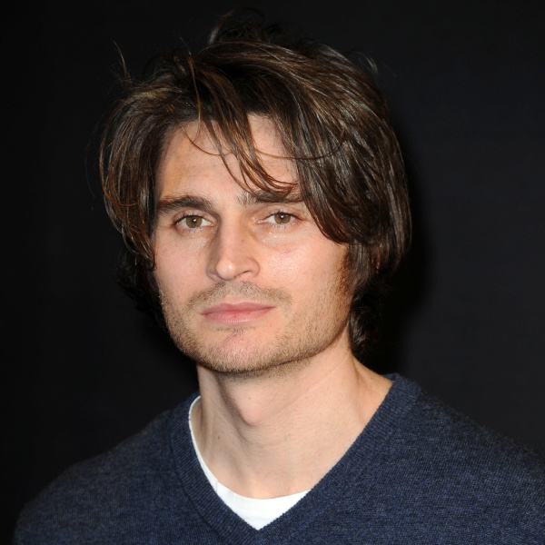

🎥 Festival del Cinema – “Stelle in Scena”
📍 Milano
📅 Mercoledì 3 settembre 2025
🕣 Dalle 20:30 alle 23:30
🎬 20:30–21:00: Red Carpet & Inaugurazione
- Accoglienza con proiezioni di trailer e corti cinematografici
- Arrivo degli ospiti e dei VIP sul red carpet
- Photowall ufficiale e interviste lampo sul palco
🏆 21:00–21:30: Cerimonia di Premiazione “Stelle in Scena”
- 🎬 Miglior Film dell’Anno
- 🎞️ Miglior Regia
- 🎼 Miglior Colonna Sonora
- Conduce: Paolo Bonolis
- Ospiti: attori, registi
- Ospiti speciali: Jannik Sinner, Angelo Duro, Tedua
🎭 21:45–22:00: Scenetta comica con Angelo Duro

Uno show tagliente, diretto e dissacrante come solo lui sa fare.
“Il politicamente scorretto non è mai stato così reale.”
🎤 22:00–22:15: Esibizione Live: TEDUA

Il rapper più influente della scena urban italiana si esibisce in un medley dei suoi brani più iconici:
- “Beatrice”
- “Hoe”
- “Bagagli”
🎙️ 22:15–22:30: Discorso motivazionale di Jannik Sinner

Dritto dal cuore, il campione racconta la sua scalata al successo.
“Il talento ti dà il via. La costanza ti porta in cima.”
🏆 22:30–23:00: Continua la Cerimonia di Premiazione
- 🌟 Premio alla Carriera
- 🗳️ Premio del Pubblico – votazione in tempo reale tramite app
- 🏆 Consegna Oscar Migliori Attori e Attrici
🎬 23:00–23:30: Gran Finale “Stelle in Scena”
- Salgono sul palco tutti i vincitori per il saluto finale
- Brano corale finale: “Vivere” – Vasco Rossi (interpretazione collettiva)
- Ringraziamenti, saluto del conduttore e annuncio della prossima edizione